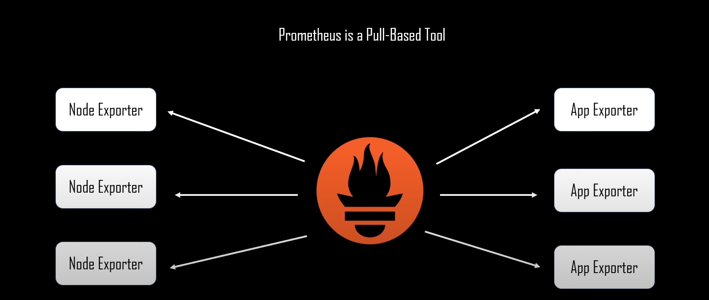

Datasource
We're going to add Prometheus Datasource to our Grafana. But before adding it we should know about Prometheus
What is Prometheus ?
- Prometheus is a software application used for event monitoring and alerting
- It records real-time metrics in a time series database built using a HTTP pull model. 
Steps
1 Create a Directory:
```sh
create a directory of any name say "datasource"
mkdir datasource
cd datasource
```
2 Download Prometheus:
```sh
wget https://github.com/prometheus/prometheus/releases/download/v2.53.0-rc.1/prometheus-2.53.0-rc.1.linux-amd64.tar.gz
```
3 Extract the tar file:
```sh
tar -xvf prometheus-2.53.0-rc.1.linux-amd64.tar.gz
cd prometheus-2.53.0-rc.1.linux-amd64/
```
4 Create a systemd service file for Prometheus:
sudo vi /etc/systemd/system/prometheus.service
(add the following line of code to make a service file for your Prometheus)
[Unit]
Description=Prometheus Service
After=network.target
[Service]
Type=simple
ExecStart=/usr/local/bin/prometheus/prometheus --config.file=/usr/local/bin/prometheus/prometheus.yml
[Install]
WantedBy=multi-user.target
5 Reload systemd and start Prometheus:
```sh
sudo systemctl daemon-reload
sudo systemctl start prometheus
sudo systemctl enable prometheus
```
6 Access Prometheus:
Open your browser and hit `10.208.34.9:9090`.
(Note : Prometheus by deafault runs on port no. 9090)
Prometheus primarily pulls data from various exporters and endpoints configured in the prometheus.yml file.
Common Exporters
- Node Exporter: Collects hardware and OS metrics.
1 For installing
wget https://github.com/prometheus/node_exporter/releases/download/v1.8.1/node_exporter-1.8.1.linux-amd64.tar.gz
tar -xvf node_exporter-1.8.1.linux-amd64
sudo cp node_exporter-1.8.1.linux-amd64/node_exporter /usr/local/bin/
2 Create a systemd service file for Node-Exporter:
sudo vi /etc/systemd/system/node-exporter.service
(add the following line of code to make a service file for your Node-Exporter)
[Unit]
Description=Prometheus Node Exporter Service
After=network.target
[Service]
Type=simple
ExecStart=/usr/local/bin/node_exporter
[Install]
WantedBy=multi-user.target
Start and enable the service:
sh
sudo systemctl daemon-reload
sudo systemctl start node-exporter
sudo systemctl enable node-exporter
Adding a Prometheus Datasource In Grafana
-
Go to
Configuration > Data Sources. -
Click on
Add data source. -
Select
Prometheusfrom the list. -
Configure the following settings:
- Name: Prometheus
- URL: http://localhost:9090
-
Click
Save & Test.